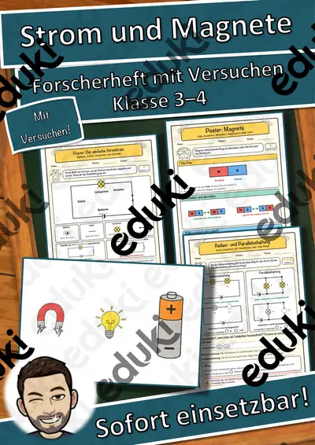
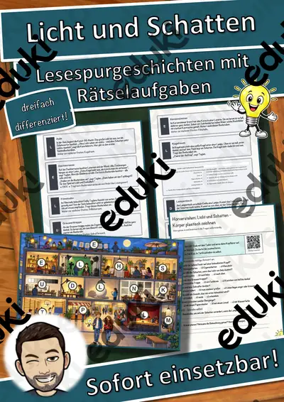
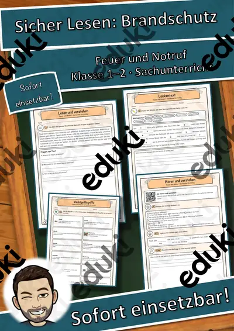

Experimentierkartei Sachunterricht: 40 Versuche
Experimentierkartei Sachunterricht: 40 Versuche mit Haushaltsmaterial für Klasse 3 und 4Auf 57 Seiten forschen die Kinder selbstständig. Zu sechs Themen (Wasser, Luft, Licht und Schatten, Magnete, Pflanzen, Küche und Alltag) gibt es 40 Versuchskarten mit Frage, Materialliste, Ablauf in kurzen Schritten, Platz für die Vermutung, die Beobachtung und eine Erklärung mit Lückenwort. Alle Versuche kommen ohne Feuer und ohne gefährliche Stoffe aus. Wo ein Erwachsener helfen muss, steht das deutlich auf der Karte.
Enthalten sind:
Lehrerinfo mit Lehrplanbezug und Sicherheitshinweisen- Forscherregeln und Forscherpass zum Abhaken- 40 Versuchskarten mit Lückenerklärung- 2 Kopiervorlagen Forscherprotokoll zum Zeichnen und Beschreiben- Begriffsheft mit 40 Fachwörtern- Urkunde- Lösungen mit Beobachtung und Lückenwort zu allen Versuchen
Name, Klasse und Datum stehen auf jeder Seite. Alle Texte, Aufgaben und Illustrationen sind eigene Entwicklungen. Das Material ist für Ihre eigene Klasse bestimmt.
Ähnliche Materialien

Strom und Magnete – Forscherheft mit Versuchen, Postern und Stromkreis-Werkstatt Kl. 3–4

Licht und Schatten – Körper plastisch zeichnen – Lesespurgeschichte mit Rätselaufgaben (Klasse 8)

Magnet – Hörverstehen mit Lückentext (interaktiv)

Magnet Lückentext mit Wortspeicher Hörverstehen und Suchsel

Feuer – Hörverstehen mit Lückentext (interaktiv)

Feuer Lückentext mit Wortspeicher Hörverstehen und Suchsel

Das Schneelabor – Lesespurgeschichte mit Rätselaufgaben (Klasse 3)
